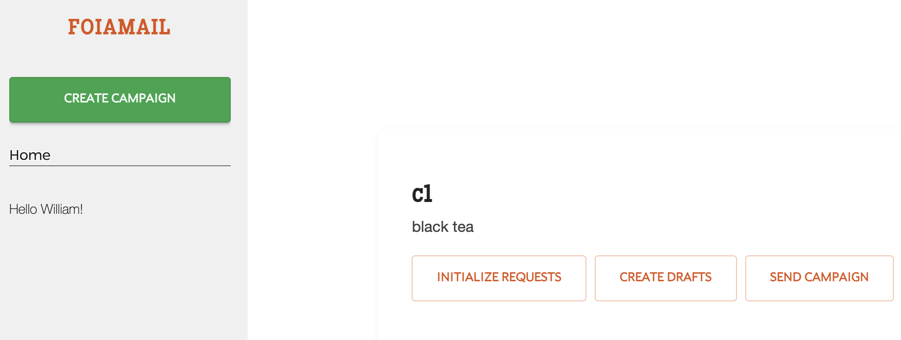

FOIAMail 2.0
Northwestern Medill Knight Lab, January 2024 - present
Working with other students and faculty at Northwestern Universitys' Knight Lab, I've helped
develop a web app that automates bulk FOIA request submission and tracking. Throughout the
process, I've written more than a thousand lines of back-end code, laying down a pipeline
for easier bulk requesting and familiarizing myself with Flask, Sqlalchemy and Google APIs
along the way.
If you're interested in early-testing FOIAMail, please reach out at williamtong2026@u.northwestern.edu.
Thanks!